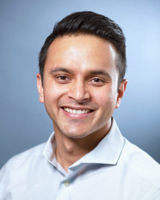

Doctoral Candidate · University of California, Irvine
I am a Ph.D. candidate in Education at the University of California, Irvine, and a National Academy of Education/Spencer Dissertation Fellow.
My research asks how K–12 school systems can better support students' learning, belonging, and access to opportunity. I am especially interested in how schools shape students' learning experiences, from culturally relevant curricula such as ethnic studies to instructional supports such as high-impact tutoring. I use administrative data and methods such as causal inference and natural language processing to study how educational programs and policies affect students' experiences and outcomes and how they are implemented, with the goal of producing evidence that can inform policy and practice.
My work has been published in the American Educational Research Journal and Educational Researcher, and featured by the Hechinger Report, Brookings, and Education Week. Previously, I was a Research Analyst at the Annenberg Institute at Brown University, where I also completed my MA in Urban Education Policy. I received my BS in Economics from the University of Oregon's Clark Honors College.

I welcome questions about my research or potential collaborations. Please feel free to reach out for drafts or more information on any of my papers.